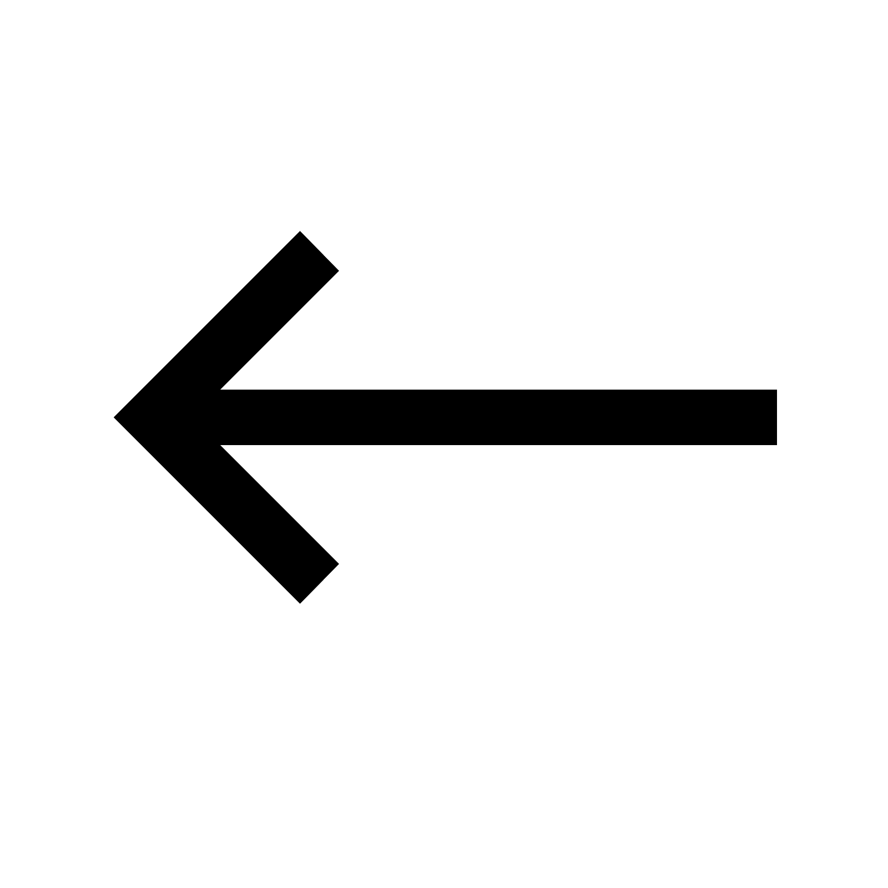
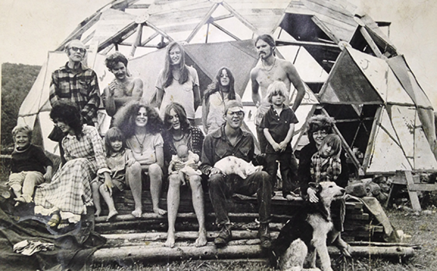
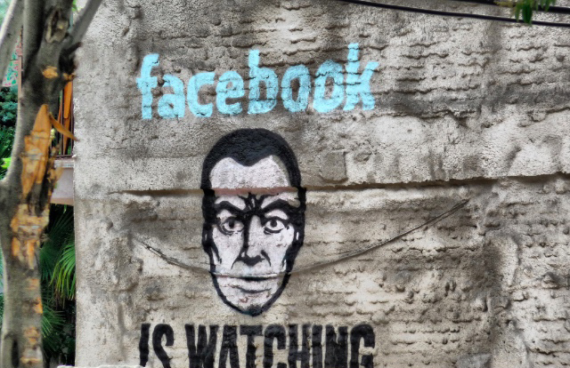

Sigmud Freud had an interesting theory that the human brain was actually an electrical machine. That all that we get from our senses creates a certain energy that flowed around networks inside of the brain. Just like electrical circles. Arthur Tansley, who was a pioneer in the science of ecology dived into Sigmund Freud’s theory. He became convinced that, as the brain was interconnected, so was the whole of the natural world, in networks, ecosystems, which he believed were inherently stable and self-correcting, and which regulated nature as if it were a machine.20
The ecology movement adopted this idea and viewed the natural world as systems. It explained how the natural system could stabilise the natural world, via natural feedback loops. Norbert Wiener laid out the position that humans, machines and ecology are simply nodes in a network.21He is talking about how one can link the behaviour of machine and the behaviour of a human through mathematical formula and you if you can module this formula or predict this formula using computers then you end up in the world where humans and machines seem to be one. That we are all now part of universal system link together by informations.
The ecosystem At the end of 1968 group of computer pioneers gave up developing large main frames and instead they would create a way of linking small personal computers in networks. These pioneers believed that in the future the computer networks will allow you to create a society that was created in the communes but in a global scale. Everyone could be free as an individual, not dominated any longer by any old hierarchies or controlled politically. Instead they would be linked together in global system that would find its own natural order. It can do it through the feedback information between millions of people on their personal computers. By the late 1960s the idea of modern nature, the ecosystem, and cybernetics theories about computers had fused together. Part of it had come to an epic new vision of how to manage the world without the old corruption of power. It was an vision that seemed to be different from all past political attempts to change the world, because it was based on natural order.
Tord Bjork, the environmental activist, explained the trick of environmental movement. Claiming that you have something like nature and in nature you have a certain balance and we need a society to have the same balance. Then it becomes unquestionable because you cannot change nature and you cannot change society because society should be the same as nature.22The concept of nature was needed to protect the system and lead. What began to rise up in 70s was the idea that we and everything else on the planet are connected together in complex webs and networks. What was beginning to disappear was the enlightenment idea that human beings are separate from the rest of nature and masters of their own destiny. Instead we started to see ourselves as components in the system and our duty was to help the system maintain its natural balance. What made this systems idea so powerful was that it did not seem to be based on any political ideology but on a scientific idea of organisation that mirrors the natural world.
But the new a generation of ecologist began to produce evidence that showed that eco system did not tend towards stability. But the very opposite was true. The nature far from seeking equilibrium was always in a state of dynamic and unpredictable change. There was no stability. Hurricanes, tornados, storms or fires, you get disturbance but the nature never came back the same way it was. Disturbance comes along and it resets the system to something new. Dr. Steward Pickett said that the balance of nature is a total illusion and we hold to it so tightly in our culture. Contemporary ecology tells us that we live in very dynamic world and you have to replace the assumption of a balance of nature and you have to get rid of the myth. The scientific bases had fallen away but the ideologist vision of self- organising system continued to grow.
In the early part of this century the idea of self- organising network remerged in was seem In the early part of this century the idea of self- organising network remerged in was seem to be its original radical form. Beginning of 2003 a wave of a spontaneous revolutions ran through Asia and Europe. In each case hundreds and hundreds people floated to capitals of Georgia, Ukraine and Kazakhstan, and they forced the old corrupt leaders from power. In all these cases no-one seemed to be in charge. The internet played the key role. It brought millions of people together to create revolutions that had no guiding ideology except to desire for self determination and for freedom. But as in all revolutions that new sense of freedom lasted only for a moment. What we often forget in the optimism of revolution was what it really happened in the original experiment of the communes.23They all failed, lasted no longer that 3 years, some for less than 6 months. What made them fall apart was the very thing that was supposed to be vanished, power. People in communes discover that some people are more free than the others, strong personalities started to dominate the weaker members of the group but the rules of a self organising system refused to allow any organised opposition to it. The failure of the commune movement and the faith of the revolutions show the limitation of the self- organising model. It cannot deal with the central dynamic forced by a human society, politics and power. The hippies took the ideal of the network society because they are disillusion with politics. They believed that this alternative way of ordering the world was good because it was based on the underline order of the nature but this was a fantasy. In reality what they adopted was an idea taken from the cold and logical world of the machines.
Now we are all disillusioned with politics and the machine organising principles became the ideology of our age. What we are discovering is that if we see ourselves as components in the system it is very difficult to change the world. It is a very good way of organising things even rebellions but it offers no idea of what comes next. And just like in the communes it leaves us helpless to those already imposed in the world.We moved from Rousseau idea of the essential state of nature towards artificial intelligence where we do not support the right of individuals but used them in the system as Zoe, bare life but we replace and govern them by machines. But what is the world we live in? The Internet seems to be a new world where we all play a role of citizens, we have our number, personal date, communication, entertainment and rights.
The states as a cloud platform
The Internet is a $11 trillion US economy, globally. It can be called post-national economy, of it serves specific individuals. Internet is like populist demagogue. In the beginning it promised to bring freedom, stabilising system, a ground free from religious or politics. As it often happens with populists they turn into authoritarianism. Now it seems like the hardest job to liberate a society that lives in the internet era where everything is connected through massive networks and is overshadowed by the “cloud.”
The cloud was first made possible by an incremental rise in computing power, server space, and trans-continental fiber-optic connectivity. It is a product of the global (information) economy, enabling a digital (social) marketplace on a worldwide scale. A “cloud” of networks situated between routers linked up by Internet Protocol (IP). But it wasn’t until 2004 that the notion of “cloud computing” was defined by Google CEO Eric Schmidt:
I don’t think people have really understood how big this opportunity really is. It starts with the premise that the data services and architecture should be on servers. We call it cloud computing—they should be in a “cloud” somewhere. And that if you have the right kind of browser or the right kind of access, it doesn’t matter whether you have a PC or a Mac or a mobile phone or a BlackBerry or what have you—or new devices still to be developed—you can get access to the cloud. There are a number of companies that have benefited from that. Obviously, Google, Yahoo!, eBay, Amazon come to mind. The computation and the data and so forth are in the servers. Google, one of the world’s seven largest cloud companies, has recently compared itself to a bank. That comparison is apt. If data in the cloud is like money in the bank, what happens to it while it resides “conveniently” in the cloud?24
The internet thanks to the cloud became the biggest source of personal informations that can be easily sold or misused. Security expert Bruce Schneier says we must “take back” the internet: “Government and industry have betrayed the internet, and us … We need to figure out how to re-engineer the internet to prevent this kind of wholesale spying. We need new techniques to prevent communications intermediaries from leaking private information.”25
The online world is a new form of collectivism that leads to a totalitarian system with a total control even thou it was created as a democratic platform disconnected from politics or economy. Internet became a new form of a state. We can look at the people on the internet as a live in territories. They have citizenship. But this feedback loop doesn’t activate political agency. No one talks about political revolution, but the “Twitter Revolution” makes headlines in mainstream media. In the Netherlands you have a DigiD governmental system.Your DigiD consists of a username and a password of your choice. With your DigiD you get access to hundreds of Dutch government websites. Government authorities use the BSN, as a unique personal number, to communicate with citizens and improve (electronic) services. This Dutch system is great example of the online citizenship. If the internet holds the power over your citizenship and personal data there is nothing to stop it from a totalitarian power.
It looks like we have no control over our societies, the governance of almost every aspect of our lives has been relegated to centralised authorities that have entirely disjoint value systems from the general public. The internet has more power than any political regime we ever had. We became prisoners of the internet with no clear idea how to liberate the internet again. The spectacle of technology needs to be unleashed to further the ends of those who wish for a way of their own, rather than rule over others. People are real. The internet is not. One of the ironies of planetary scale computation and mainly the challenges that it brings to the traditional sovereignties of the modern nation state is that on one hand global cloud platforms take on the role and provide services that have traditionally been provided by the state. But it does not mean that the state is somehow virtualising and going away. The states themselves become cloud platforms. One example where we can see this is the way in which we used to call traditional media shift in term of their relationship to their state sponsors.
The Internet is a $11 trillion US economy, globally. It can be called post-national economy, of it serves specific individuals. Internet is like populist demagogue. In the beginning it promised to bring freedom, stabilising system, a ground free from religious or politics. As it often happens with populists they turn into authoritarianism. Now it seems like the hardest job to liberate a society that lives in the internet era where everything is connected through massive networks and is overshadowed by the “cloud.”
The cloud was first made possible by an incremental rise in computing power, server space, and trans-continental fiber-optic connectivity. It is a product of the global (information) economy, enabling a digital (social) marketplace on a worldwide scale. A “cloud” of networks situated between routers linked up by Internet Protocol (IP). But it wasn’t until 2004 that the notion of “cloud computing” was defined by Google CEO Eric Schmidt:
I don’t think people have really understood how big this opportunity really is. It starts with the premise that the data services and architecture should be on servers. We call it cloud computing—they should be in a “cloud” somewhere. And that if you have the right kind of browser or the right kind of access, it doesn’t matter whether you have a PC or a Mac or a mobile phone or a BlackBerry or what have you—or new devices still to be developed—you can get access to the cloud. There are a number of companies that have benefited from that. Obviously, Google, Yahoo!, eBay, Amazon come to mind. The computation and the data and so forth are in the servers. Google, one of the world’s seven largest cloud companies, has recently compared itself to a bank. That comparison is apt. If data in the cloud is like money in the bank, what happens to it while it resides “conveniently” in the cloud?24
The internet thanks to the cloud became the biggest source of personal informations that can be easily sold or misused. Security expert Bruce Schneier says we must “take back” the internet: “Government and industry have betrayed the internet, and us … We need to figure out how to re-engineer the internet to prevent this kind of wholesale spying. We need new techniques to prevent communications intermediaries from leaking private information.”25
The online world is a new form of collectivism that leads to a totalitarian system with a total control even thou it was created as a democratic platform disconnected from politics or economy. Internet became a new form of a state. We can look at the people on the internet as a live in territories. They have citizenship. But this feedback loop doesn’t activate political agency. No one talks about political revolution, but the “Twitter Revolution” makes headlines in mainstream media. In the Netherlands you have a DigiD governmental system.Your DigiD consists of a username and a password of your choice. With your DigiD you get access to hundreds of Dutch government websites. Government authorities use the BSN, as a unique personal number, to communicate with citizens and improve (electronic) services. This Dutch system is great example of the online citizenship. If the internet holds the power over your citizenship and personal data there is nothing to stop it from a totalitarian power.
It looks like we have no control over our societies, the governance of almost every aspect of our lives has been relegated to centralised authorities that have entirely disjoint value systems from the general public. The internet has more power than any political regime we ever had. We became prisoners of the internet with no clear idea how to liberate the internet again. The spectacle of technology needs to be unleashed to further the ends of those who wish for a way of their own, rather than rule over others. People are real. The internet is not. One of the ironies of planetary scale computation and mainly the challenges that it brings to the traditional sovereignties of the modern nation state is that on one hand global cloud platforms take on the role and provide services that have traditionally been provided by the state. But it does not mean that the state is somehow virtualising and going away. The states themselves become cloud platforms. One example where we can see this is the way in which we used to call traditional media shift in term of their relationship to their state sponsors.





Fig.11. R.J. Bartrop, The Thrilling Computer Stories, 2003, Illustration
Fig.12. View of Biosphere 2, Habitat & Lung, photograph 2009
Fig.13. Myrtle Hill commun [Photograph](1971) Retrieved from https://www.pri.org/stories/2016-05-28/todays-movement-toward-sustainable-living-echoes-not-so-distant-past
Fig.15. Fig.12. Facebook is watching you. [Wall Spray]. (n.d.). Retrieved from http://hackeducation.com/2015/10/15/technoimperialism
Fig.14. Fuck Your Empire [Collage](2018)
Fig.16. The State of Clouds [Collage](2018)
19 Kenton, Will. “Asian Financial Crisis.” Investopedia, 13 Dec. 2018, Click!
20 Sir Arthur George Tansley, 1871–1955.” Tansley and Ecology, www.new-
phytologist.org/trust/tansley/ecology.
22 All Watched Over by Machines of Loving Grace - Episode 2 Vimeo, 5 Aug. 2018,Click!
21 Cybernetics: Or Control and Communication in
the Animal and the Machine.” Wikipedia, Wikimedia Foundation, 7 Oct. 2018, Click!
the Animal and the Machine.” Wikipedia, Wikimedia Foundation, 7 Oct. 2018, Click!
23 “Commune.” Wikipedia, Wikimedia Foundation,
28 Nov. 2018,Click!
28 Nov. 2018,Click!
Conclusion
The idea to become a Ayn Rand’s hero brought us to a new system that is far from equality and individual freedom. It’s called neoliberalism. Those ideas include economic liberalisation policies such as privatisation, deregulation, free trade and reductions in government spending in order to increase the role of the private sector in the economy and society. Neoliberalism came to us under the banners of democracy and freedom, but in fact, it denies all its principles, and even is unable to guarantee respect for human rights, as it rejects the principles of solidarity. The consequences of neo-liberalism in the form of social inequality, the collapse of the ecological system, and the collapse of international order, are creating more and more security threats. The uncertainty created by these threats, as well as the general disappointment of people from cowardly lives, have already awakened from the grave the classic fascism with which neoliberalism can eventually merge, and thus create a new, yet unknown form of authoritarianism. Also, by removing the influence of the state, democracy will eventually collapse, as sooner or later the market will dominate corporations, and consequently nothing will stand in the way to privatise the weak state and create totalitarianism.
The result of removing the state in its classical form the modern networks are trying to recreate something that is in many ways similar to state. Mark Zuckerberg, co-founder of Facebook, presented his plan to connect the entire world under Facebook platform. Facebook’s mission is: “To give people the power to share and make the world more open and connected. People use Facebook to stay connected with friends and family, to discover what’s going on in the world, and to share and express what matters to them.” It is a great populist promise but it has its own grand project. To turn the human world into one big information system. But the imperative to “connect people” lacks the one ingredient essential for being a good citizen: Treating individual human beings as sacrosanct. To Facebook, the world is not made up of individuals, but of connections between them. The billions of Facebook accounts belong not to “people” but to “users,” collections of data points connected to other collections of data points on a vast Social Network, to be targeted and monetised by computer programs. The data privacy is an internets biggest move against democracy. Data created a shit in power. People that own data rule the world.
Everything suggests that the most difficult struggle for democracy is waiting for us, struggling with a system that has declared itself to be an integral part of it, but in reality denies it. So, those who protect democracy will be the names of her enemies, but if we remain faithful to democracy values and remain uncompromising within her boundaries, then we must win, because every tyranny must end once. Everything is in the mentality of people. We have to wake up as the human species. We should become our own leaders. That might be the next step forward. The question is do we really need leadership? If we need leaders that suggests we are infants and we are not capable of making mature decisions ourselves. The role of leadership in society should gets reduced.
The result of removing the state in its classical form the modern networks are trying to recreate something that is in many ways similar to state. Mark Zuckerberg, co-founder of Facebook, presented his plan to connect the entire world under Facebook platform. Facebook’s mission is: “To give people the power to share and make the world more open and connected. People use Facebook to stay connected with friends and family, to discover what’s going on in the world, and to share and express what matters to them.” It is a great populist promise but it has its own grand project. To turn the human world into one big information system. But the imperative to “connect people” lacks the one ingredient essential for being a good citizen: Treating individual human beings as sacrosanct. To Facebook, the world is not made up of individuals, but of connections between them. The billions of Facebook accounts belong not to “people” but to “users,” collections of data points connected to other collections of data points on a vast Social Network, to be targeted and monetised by computer programs. The data privacy is an internets biggest move against democracy. Data created a shit in power. People that own data rule the world.
Everything suggests that the most difficult struggle for democracy is waiting for us, struggling with a system that has declared itself to be an integral part of it, but in reality denies it. So, those who protect democracy will be the names of her enemies, but if we remain faithful to democracy values and remain uncompromising within her boundaries, then we must win, because every tyranny must end once. Everything is in the mentality of people. We have to wake up as the human species. We should become our own leaders. That might be the next step forward. The question is do we really need leadership? If we need leaders that suggests we are infants and we are not capable of making mature decisions ourselves. The role of leadership in society should gets reduced.